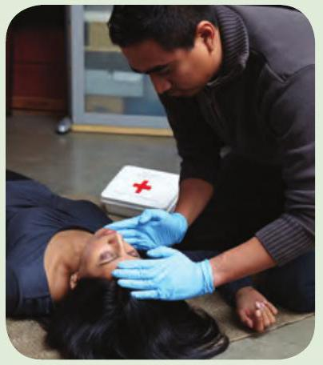
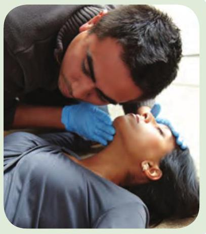
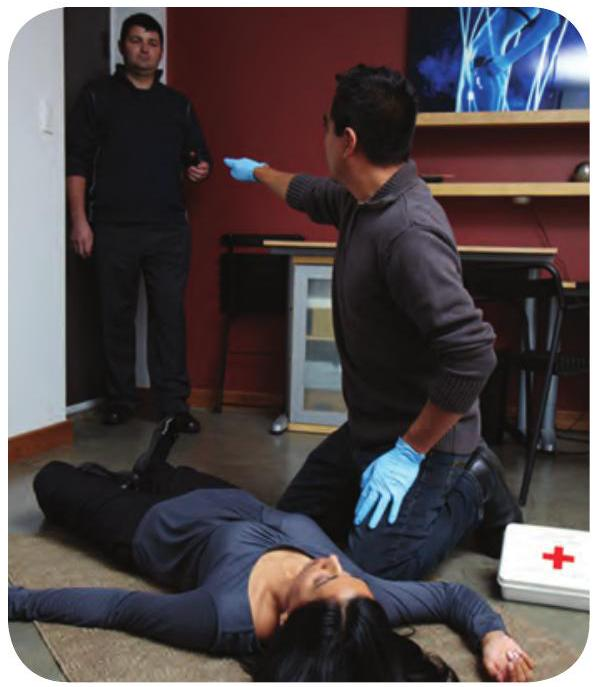
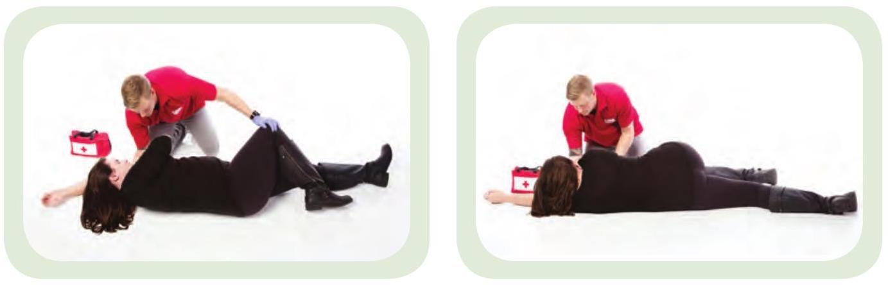
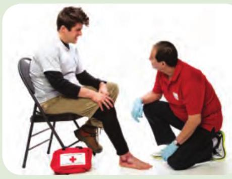
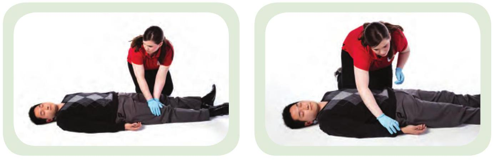
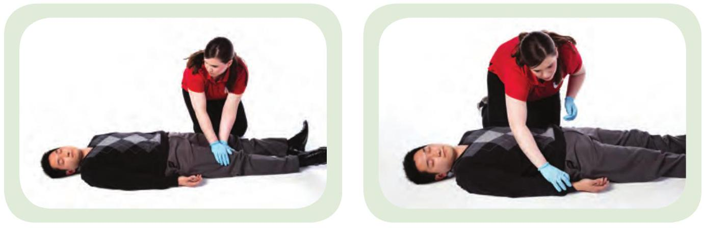

Check, Call, Care
When you encounter an ill or injured person, you will repeat the check, call, and care steps until the person's condition improves or EMS personnel arrive.

Check
Once you recognize an emergency, you must first check the scene, and then check the person.
Check the Scene
Before approaching an ill or injured person, stop and take a good look at the scene:
- Is the scene safe?
- Are there any hazards?
- What happened?
- How did it happen?
Check the Person (Primary Assessment)
If the scene is safe, quickly check the person:
- Check whether the person is responsive.
- Check the person's ABCs:
- Airway
- Breathing
- Circulation
Checking ABCs
A = CHECK THE AIRWAY
Make sure the person has an open airway. If the person is speaking, moaning, or crying, the person's airway is open.
If the person is unresponsive, perform a head-tilt/chin-lift by gently tilting the head back until the chin is pointing up.
B = CHECK BREATHING
Check for normal breathing for 5 to 10 seconds. A person is breathing normally if air is moving into and out of the lungs and the chest is rising and falling in a normal, regular pattern. Someone who can speak or cry is breathing.
C = CHECK CIRCULATION
Quickly look at the person from head to toe for signs of life-threatening bleeding.

Unresponsiveness, difficulty breathing, and life-threatening bleeding are life-threatening emergencies. These conditions must be your top priority. Obtain an automated external defibrillator (AED) and first aid kit if these items are available.
Call

If an individual is unresponsive or has a life-threatening condition, you must always activate EMS. Whenever possible, use a mobile phone or ask a bystander to call EMS/9-1-1.
If you are alone with the person and you do not have a mobile phone, call out loudly for help. If no one comes, get to a phone as quickly as you can and call EMS/9-1-1. As soon as you hang up, return to the person.
If a person becomes unresponsive, his or her vital signs deteriorate, or your secondary assessment reveals a condition that requires emergency care, call EMS/9-1-1 immediately.
Care

Care for any life-threatening conditions first. Give the care that is needed, within the scope of your knowledge and training. Continue to Check, Call, and Care, providing continual care with these guidelines:
- Monitor the person's breathing, level of responsiveness, and overall condition.
- Help the person rest in a comfortable position.
- If necessary, roll the person into the recovery position.
- Keep the person from getting chilled or overheated.
- Reassure the person.

Recovery Position
A person who is unresponsive or has an altered level of responsiveness should be rolled into the recovery position.
When placing a person in the recovery position, remember:
- Support and protect the head while rolling the person.
- Try to roll the person as one unit (head, back, and legs at the same time).
- Roll the person into a position where the body will stay safely on its side.
- Check the ABCs after you complete the roll.
Helping a Person With Medication
You should help a person take his or her medication only if:
- It is safe to do so.
- The person is responsive and has in some way expressed a need for help finding, preparing, and/or taking the medication.
FINDING THE MEDICATION
Find the medication and review all information on the package, including the name of the medication, any instructions or warnings, and, in the case of prescription medication, the person's name.
PREPARING THE MEDICATION
Follow the instructions on the label to prepare the medication for the person to ingest, inhale, or inject.
GUIDING THE PERSON IN TAKING THE MEDICATION
Guide the person in taking the medication by reading the instructions to the person and/or showing the person how to take the medication.
GIVING LIFESAVING MEDICATION
Rescue inhalers and epinephrine auto-injectors are lifesaving medications. If the person cannot give him- or herself lifesaving medication, prepare it, obtain permission, and either press the inhaler's plunger or inject the epinephrine for the person.
Secondary Assessment
Once you are confident that all life-threatening conditions have been addressed, perform a secondary assessment to check for conditions that may not be as obvious. The secondary assessment consists of three steps:
1. Ask SAMPLE Questions
Interview the ill or injured person and any bystanders at the scene using the acronym SAMPLE to guide your questions:
- Signs and symptoms
- Allergies
- Medications
- Past medical history
- Last oral intake (food or drink)
- Events leading up to the emergency

2. Check the Vital Signs
LEVEL OF RESPONSIVENESS
Is the person alert, sleepy, or confused? Is the person's responsiveness changing?
BREATHING
Listen for sounds. Is the breathing fast or slow? Shallow or deep? Painful?
SKIN
Is skin dry or wet? An unusual colour or temperature?
3. Perform an Injury Check
Look carefully for injuries that were not identified during the primary assessment. An injury check may involve a focused examination or a hands-on check. If you find a medical-identification product during your check, read it carefully.
Focused Examination
If the person is responsive and able to answer questions, do a focused examination. If the person's condition deteriorates, respond immediately (e.g., call EMS/9-1-1, provide care).
- Explain that the purpose of the examination is to identify injuries. 
- Ask the person if anything hurts or feels uncomfortable.
- If the person indicates an area of pain or concern, look at the area for signs of injury.
- Ask focused questions about how the person feels.

Hands-On Check
If a person is breathing but unresponsive or unable to communicate, you may need to do a hands-on check. Begin by checking the head for injuries, and then work downward, focusing on the chest, abdomen, and legs before checking the arms.
 

Shock
Be on the lookout for shock when providing care for any injury or sudden illness or whenever someone has been involved in a serious incident. Shock is a life-threatening condition.
What to Look For
The following are signs and symptoms of shock:
- Anxiety or confusion
- Cool, clammy skin that may be paler than normal
- Weakness
- Excessive thirst
- Rapid breathing
- Drowsiness or loss of responsiveness
- Nausea and vomiting
Call
Call EMS/9-1-1.
Care
People in shock need medical care. Call EMS/9-1-1 if you haven't already done so. While you are waiting for EMS personnel to arrive:
- Care for the suspected cause of the shock.
- Provide continual care.